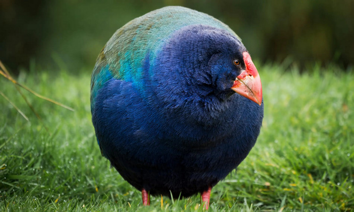
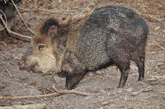

Цифровой архив животных, подвергшихся эффекту Лазаря.
Архив животных, считавшихся вымершими.
Истории повторного обнаружения видов.
Исследование редких случаев возвращения видов.

История одного из самых известных случаев эффекта Лазаря.

Млекопитающее, найденное спустя столетия.